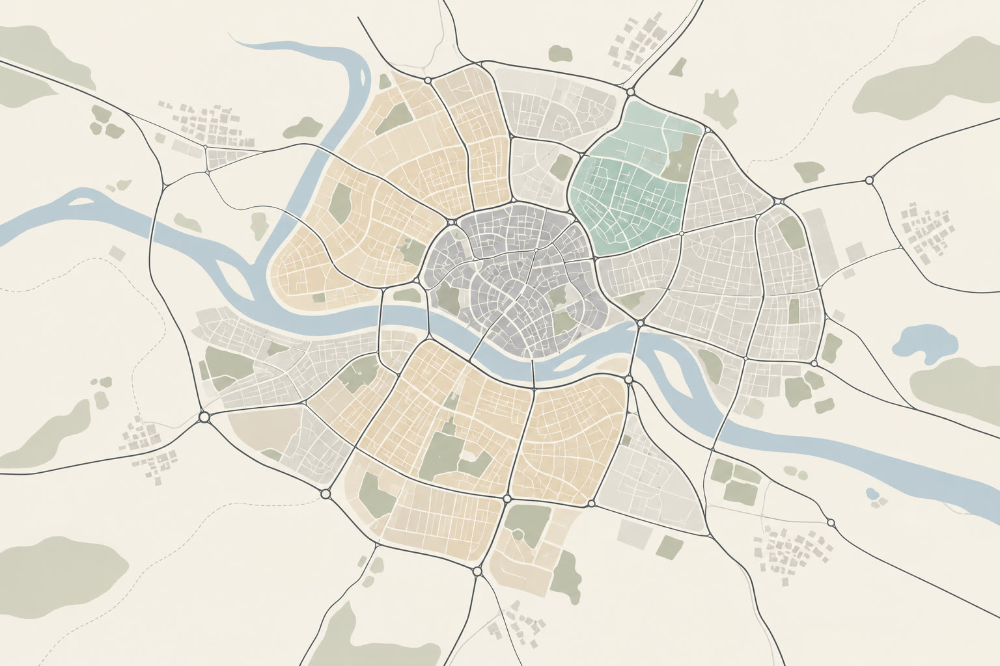

A naming proposal for Bedah · 20 Nov 2026 · proposal, not a feature
How a review canvas could mark, for each part of a project, what that part needs in order to run: an AI model, plain deterministic code, or nothing at all. With names for the kinds, an honest check of where the split fails, and the gaps every repository actually has.

Three kinds are a good start, but alone they are neither exhaustive nor separate.
The three-way question a reader wants answered: how much of this project is the model, and how much stands on its own? The kinds overlap, one file can be static bytes and AI behavior at the same time, and they miss parts every repo has: config, docs, tests, and services that live outside the repo. The fix is not more guessing. Keep the three as the behavior of each part, add the missing kinds, and give the unknowns their own visible bucket.
One more split matters and it is not a kind: whether AI wrote a part at build time, or the part calls AI at runtime. That is a tag on the part, not a bucket of its own.
Short Indonesian words, matching this project's naming conventions. An earlier draft of this proposal named them otak, hitung and benda; those read as the human brain, as numeric calculation only, and as physical objects with no room for documents. The names below were chosen to say the meaning themselves. Alternatives are noted, and every name here stays a proposal.
The part asks a model while the app runs. No model, no answer. Model weights and prompt templates live here too: their bytes sit still, but their behavior comes from the model. Also considered: minta, pinjam.
Deterministic code, certain: same input, same output, no model involved. Parsers, schedulers, generators, comparators. Also considered: tetap, ajeg.
Inert content the project carries: markup, styles, icons, images, data files, and documents shipped as content, including data its own tools generate at build time. Also considered: konten, sajian, wujud.
src/codemap.ts is muatan produced by pasti. Two kinds, one build step apart.Configuration that binds the parts: package manifests, lockfiles, CI workflows, ignore files. Not logic, not content, but the project breaks without it.
Prose for people: README, docs, comments. Bedah already treats these as structural only and unverified, which fits here.
Tests and fixtures. They prove behavior but ship nothing, so they are neither pasti nor muatan.
Services the project calls but does not contain: a hosted model endpoint, a paid API. Invisible to a file scan, so the repo has to declare them.
Anything the classifier cannot place: still in the fog. A first-class bucket, shown and never dropped, the way Bedah shows unassigned files today. Also considered: asing, gaib.
Where documents live
Documents are not homeless in this split. Prose written for people, a README, design notes, research like this page, is kata. A document the project ships as content, a PDF guide an app displays, is muatan. The earlier name benda, a physical thing, hid both; muatan, what a project carries, holds the second without swallowing the first.
Why kabut matters most
A review tool that silently forces every file into a bucket hides its own uncertainty. Bedah already shows unassigned files rather than dropping them; kabut extends that honesty to kinds.
The extractors: deterministic AST and line scans.
Hand-written canvas and build logic.
Static data generated by pasti at build time.
The static shell and static pages like this one.
Wiring: dependencies and the deploy pipeline.
Words for readers, including the written-up version of this idea.
No tanya in Bedah today
The whole canvas runs without a model, and uji is empty too: the extractors are checked with a comparison tool and an unpublished fixture, per the README. A kinds view would show both absences, which is itself useful evidence.
Behavior decides the kind: what does the part need in order to run? Provenance is a separate question: who or what wrote it? Mixing the two is how every AI-assisted project ends up looking like it is all AI.
For build-time AI authorship, one tag: bekas, a trace. A file written by AI at build time but running with no model is pasti or muatan with a bekas mark. A part that asks a model at runtime is tanya whether a human or an AI typed it. Where authorship is not recorded, bekas is itself unverified and should be labeled that way.
Proposal only
Nothing here is built or changed in the canvas. This page and the research note in docs/research are the whole of it; names and kinds are open for revision.
Two public efforts record that a model is present in an inventory. Neither tries to draw which parts of one project are model-dependent, which is the gap this idea addresses. This note has not surveyed academic work on software decomposition; other taxonomies may exist there.
SPDX 3.0 AI package profile, for recording models in a software bill of materials.
CycloneDX ML-BOM, for model and dataset inventory in security review.
Checked against the bedah repo README and file tree on 20 Nov 2026. A proposal, not a built feature. Source: github.com/irvan-putra/bedah.